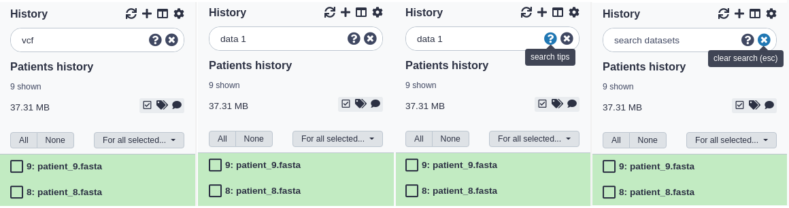

Searching Your History
 Helena Rasche
Helena Rasche Anton Nekrutenko
Anton NekrutenkoOverview
question Questionsobjectives Objectives
How can you find your datasets?
How to search by file type?
What filters are available to you?
Feel confident in searching your history
time Time estimation: 5 minutes
level Level: Introductory level level level
last_modification Last modification: Jan 6, 2021
Agenda
In this tutorial, we will deal with:
Basic Searching
You can filter what datasets are shown and search for datasets using the search bar at the top of the panel. Enter any text that a dataset you’d be looking for would contain, including:
- the name or part of the name
- any text (or partial text) from the info field
- the file format or reference database
- any text or partial text from the annotation or tags of a dataset
For example:
- To find all vcf files you might enter:
vcfalone. - To find all files whose names contain data 1, you can enter:
data 1 - To search for a VCF file named ‘VCF filter on data 1’ and tagged with ‘experiment_1’, you could enter:
vcf filter on data 1 experiment_1
comment Do I search for VCF or vcf?
Searches are case-insensitive. For example,
VCFandvcfare equivalent.

Clearing a Search
You can clear a search and show all visible datasets by clicking the round ‘X’ button in the right of the search bar or - while entering text in the search bar - hitting the escape key (‘Esc’).
Advanced Searching
You can also specify dataset properties that you want to filter on. If you search with multiple properties, these are connected with ANDs, so datasets must match all provided attributes.
| Query | Results |
|---|---|
name="FASTQC on" |
Any datasets with “FASTQC on” in the title, but avoids items which have “FASTQC on” in other fields like the description or annotation. |
format=vcf |
Datasets with a specific format. Some formats are hierarchical, e.g. searching for fastq will find fastq files but also fastqsanger and fastqillumina files. You can see more formats in the upload dialogue. |
database=hg19 |
Datasets with a specific reference genome |
annotation="first of five" |
  |
description="This is data of a Borneo Orangutan" |
for dataset summary description |
info="started mapping" |
for searching on job’s info field. |
tag=experiment1 tag=to_publish |
for searching on (a partial) dataset tag. You can repeat to search for more tags. |
hid=25 |
A specific history item ID (based on the ordering in the history) |
state=error |
To show only datasets in a given state. Other options include ok, running, paused, and new. |
history_content_type=collection |
Filter for collections |
comment Combining Searches
Keyword searches can be combined:
database=mm10 annotation=successfulYou can enclose text with double quotes and include spaces:name="My Dataset" annotation="First run". Only the datasets that meet ALL search criteria will be shown.
If you find normal searching is showing too many datasets, and not what you’re looking for, try the advanced, keyword search.

Search and multi-select
It’s often useful to combine search and multi-select. Multi-selections will persist between searches, and the All/None buttons will only apply to the datasets currently shown with the given search.
So, for example, to select and manipulate two different sets of datasets:
- fastqsanger files tagged with ‘low quality’
- hg19 reference BAM files whose names contain “Output”
You can do the following steps:
- In the search bar, enter:
format=fastqsanger tag="low quality"and hit enter. - Click the multi-select button to show the checkboxes.
- Click the ‘All’ button to select all the fastqsanger files
- In the search bar, enter:
database=hg19 format=BAM name=outputand hit enter. - Click the ‘All’ button again to select all the BAM files.
- Clear the search using the clear button. All datasets are shown and both fastqsanger and BAM files are still selected.
- You can now perform some action on those two sets of datasets like building a collection or batch deleting them.
keypoints Key points
Searching is easy and powerful
It will help you manage large histories with complex analyses
Feedback
Did you use this material as an instructor? Feel free to give us feedback on how it went.

Citing this Tutorial
- Helena Rasche, Anton Nekrutenko, 2021 Searching Your History (Galaxy Training Materials). /training-material/topics/galaxy-interface/tutorials/search/tutorial.html Online; accessed TODAY
- Batut et al., 2018 Community-Driven Data Analysis Training for Biology Cell Systems 10.1016/j.cels.2018.05.012
details BibTeX
@misc{galaxy-interface-search, author = "Helena Rasche and Anton Nekrutenko", title = "Searching Your History (Galaxy Training Materials)", year = "2021", month = "01", day = "06" url = "\url{/training-material/topics/galaxy-interface/tutorials/search/tutorial.html}", note = "[Online; accessed TODAY]" } @article{Batut_2018, doi = {10.1016/j.cels.2018.05.012}, url = {https://doi.org/10.1016%2Fj.cels.2018.05.012}, year = 2018, month = {jun}, publisher = {Elsevier {BV}}, volume = {6}, number = {6}, pages = {752--758.e1}, author = {B{\'{e}}r{\'{e}}nice Batut and Saskia Hiltemann and Andrea Bagnacani and Dannon Baker and Vivek Bhardwaj and Clemens Blank and Anthony Bretaudeau and Loraine Brillet-Gu{\'{e}}guen and Martin {\v{C}}ech and John Chilton and Dave Clements and Olivia Doppelt-Azeroual and Anika Erxleben and Mallory Ann Freeberg and Simon Gladman and Youri Hoogstrate and Hans-Rudolf Hotz and Torsten Houwaart and Pratik Jagtap and Delphine Larivi{\`{e}}re and Gildas Le Corguill{\'{e}} and Thomas Manke and Fabien Mareuil and Fidel Ram{\'{\i}}rez and Devon Ryan and Florian Christoph Sigloch and Nicola Soranzo and Joachim Wolff and Pavankumar Videm and Markus Wolfien and Aisanjiang Wubuli and Dilmurat Yusuf and James Taylor and Rolf Backofen and Anton Nekrutenko and Björn Grüning}, title = {Community-Driven Data Analysis Training for Biology}, journal = {Cell Systems} }